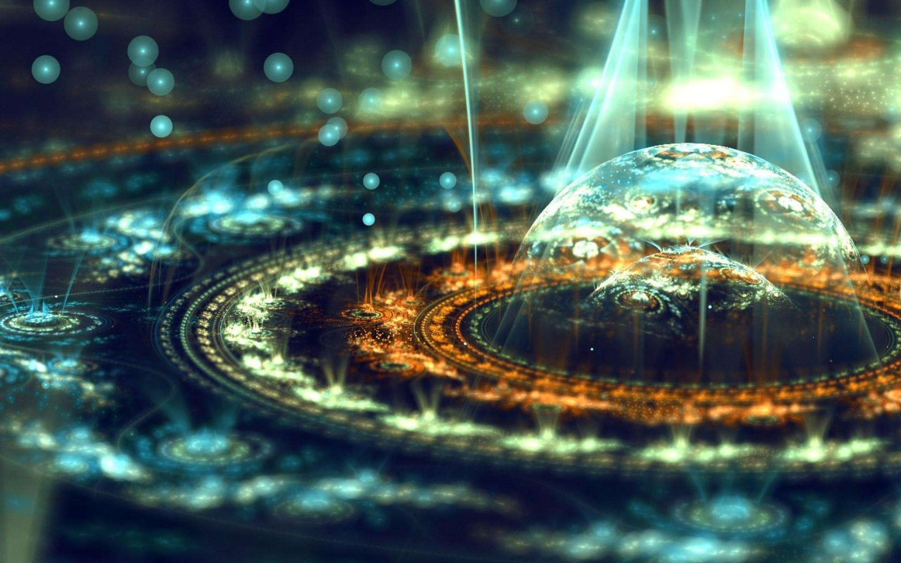
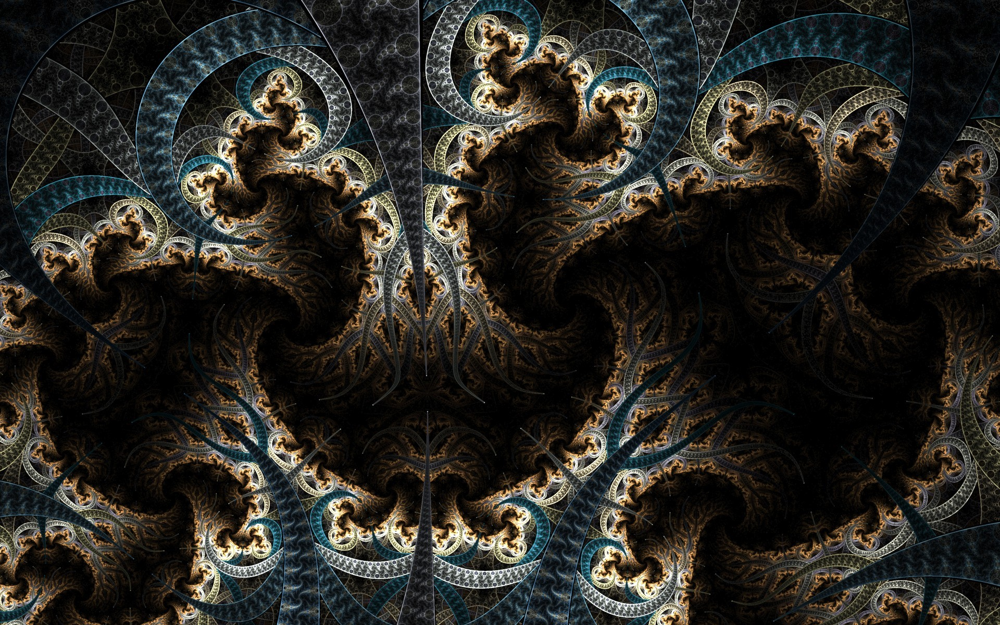
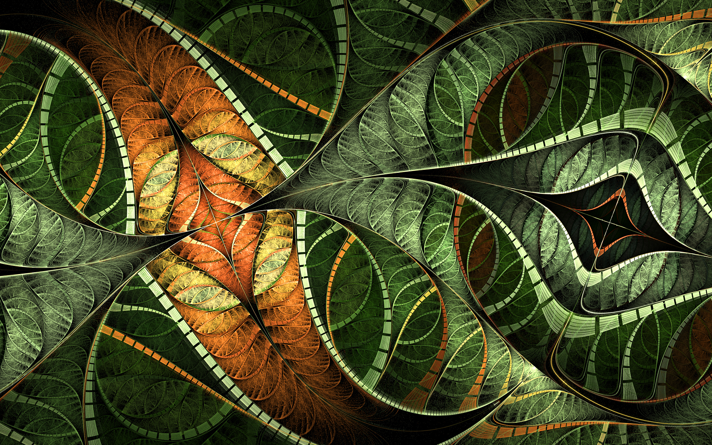
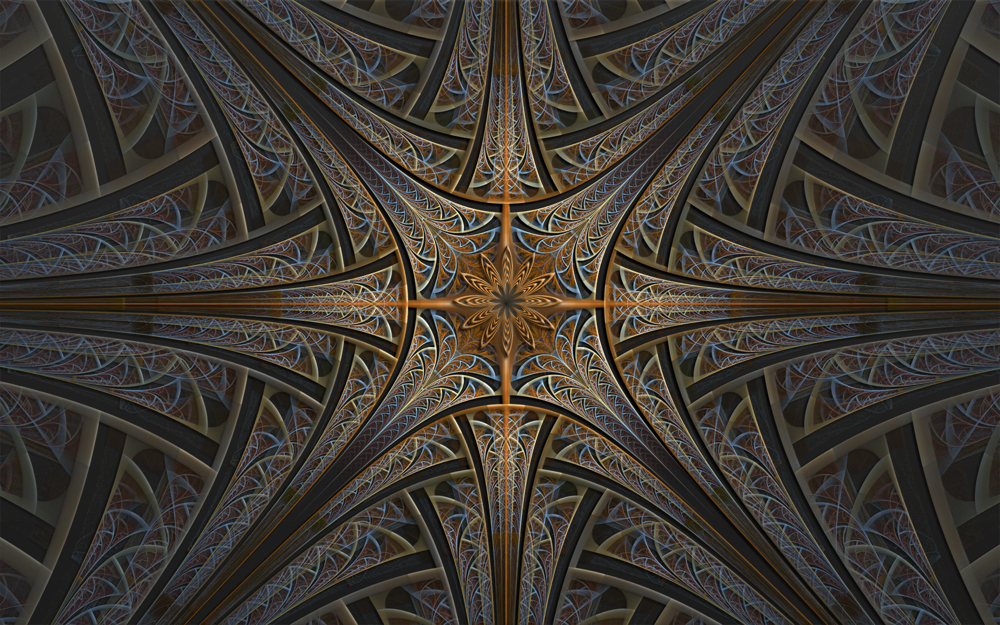
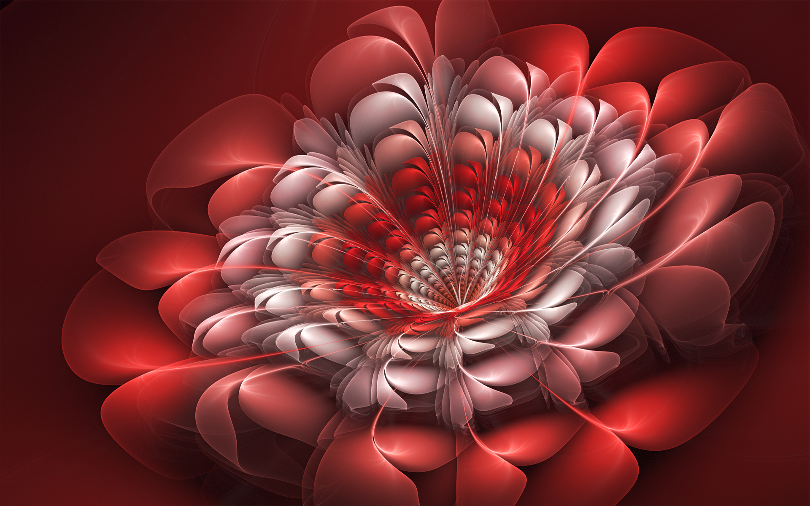
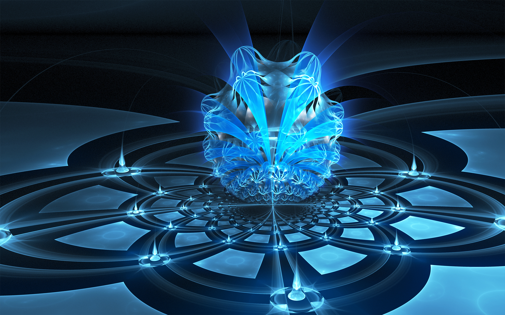
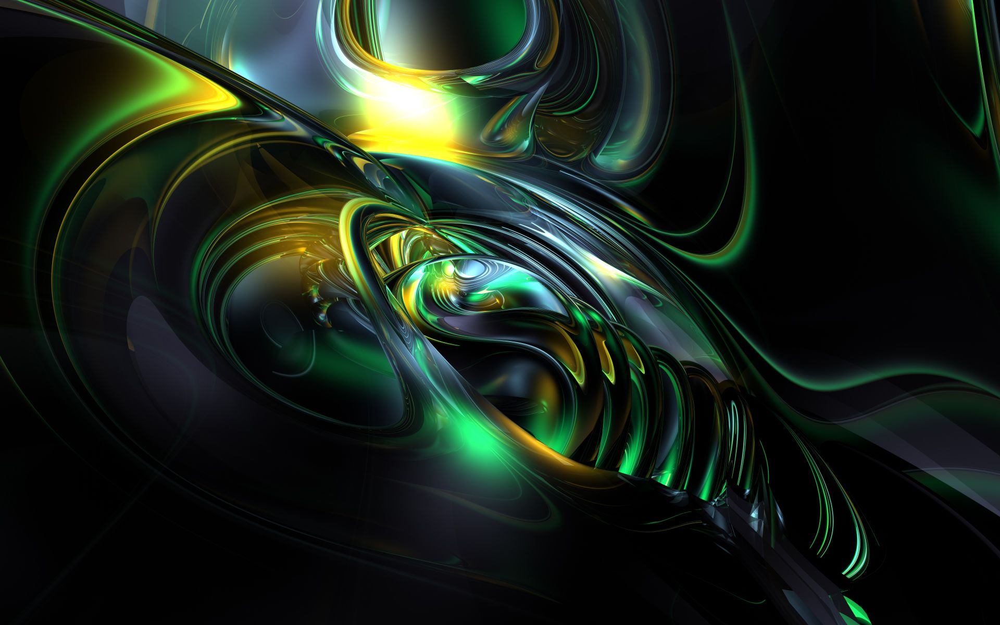
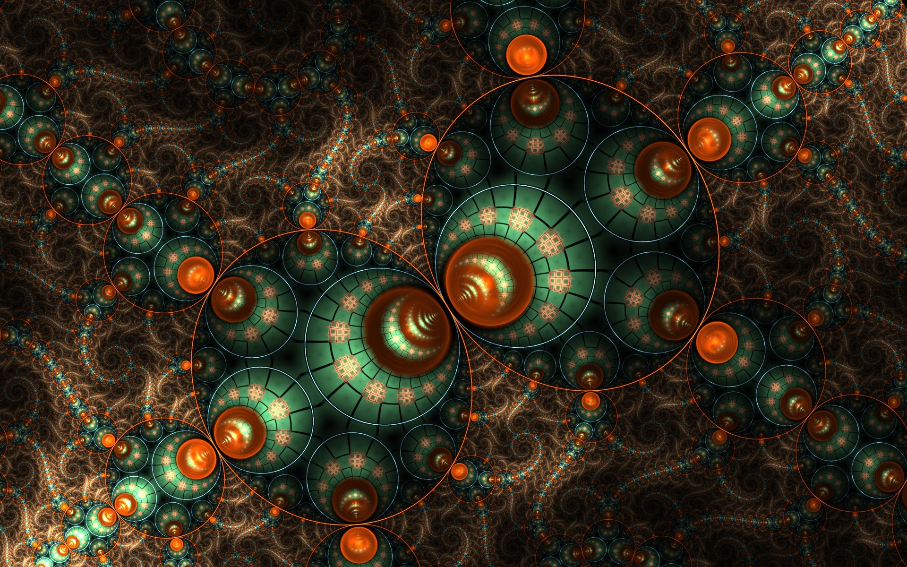

Fractal 1
Fractal 2
Fractal 3
Fractal 4
Fractal 5
Fractal 6
Fractal 7
Fractal 8
Un fractal es un objeto geométrico cuya estructura básica, fragmentada o aparentemente irregular, se repite a diferentes escalas. El término fue propuesto por el matemático Benoît Mandelbrot en 1975 y deriva del latín fractus, que significa quebrado o fracturado. Muchas estructuras naturales son de tipo fractal. La propiedad matemática clave de un objeto genuinamente fractal es que su dimensión métrica fractal es un número racional mayor que su dimensión topológica. Si bien el término "fractal" es reciente, los objetos hoy denominados fractales eran bien conocidos en matemáticas desde principios del siglo XX. Las maneras más comunes de determinar lo que hoy denominamos dimensión fractal fueron establecidas a principios del siglo xx en el ámbito de la teoría de la medida. Introducción La definición de fractal desarrollada en los años 1970 dio unidad a una serie de ejemplos, algunos de los cuales se remontaban a un siglo antes. A un objeto geométrico fractal se le atribuyen las siguientes características: Es demasiado irregular para ser descrito en términos geométricos tradicionales. Es autosimilar, su forma es hecha de copias más pequeñas de la misma figura. Las copias son similares al todo: misma forma pero diferente tamaño. Ejemplos de autosimilitud: Fractales naturales son objetos naturales que se pueden representar con muy buena aproximación mediante fractales matemáticos con autosimilitud estadística. Los fractales encontrados en la naturaleza se diferencian de los fractales matemáticos en que los naturales son aproximados o estadísticos y su autosimilitud se extiende solo a un rango de escalas (por ejemplo, a escala cercana a la atómica su estructura difiere de la estructura macroscópica). Conjunto de Mandelbrot es un fractal autosimilar, generado por el conjunto de puntos estables de órbita acotada bajo cierta transformación iterativa no lineal. Paisajes fractales, este tipo de fractales generados computacionalmente pueden producir paisajes realistas convincentes. Fractales de pinturas, se utilizan para realizar el proceso de decalcomanía. Su dimensión de Hausdorff-Besicovitch es estrictamente mayor que su dimensión topológica. Se define mediante un simple algoritmo recursivo. No basta con una sola de estas características para definir un fractal. Por ejemplo, la recta real no se considera un fractal, pues a pesar de ser un objeto autosimilar carece del resto de características exigidas. Un fractal natural es un elemento de la naturaleza que puede ser descrito mediante la geometría fractal. Las nubes, las montañas, el sistema circulatorio, las líneas costeras o los copos de nieve son fractales naturales. Esta representación es aproximada, pues las propiedades atribuidas a los objetos fractales ideales, como el detalle infinito, tienen límites en el mundo natural.
PARA MAS INFORMACION Y RECURSOS SOBRE EL ARTE FRACTAL